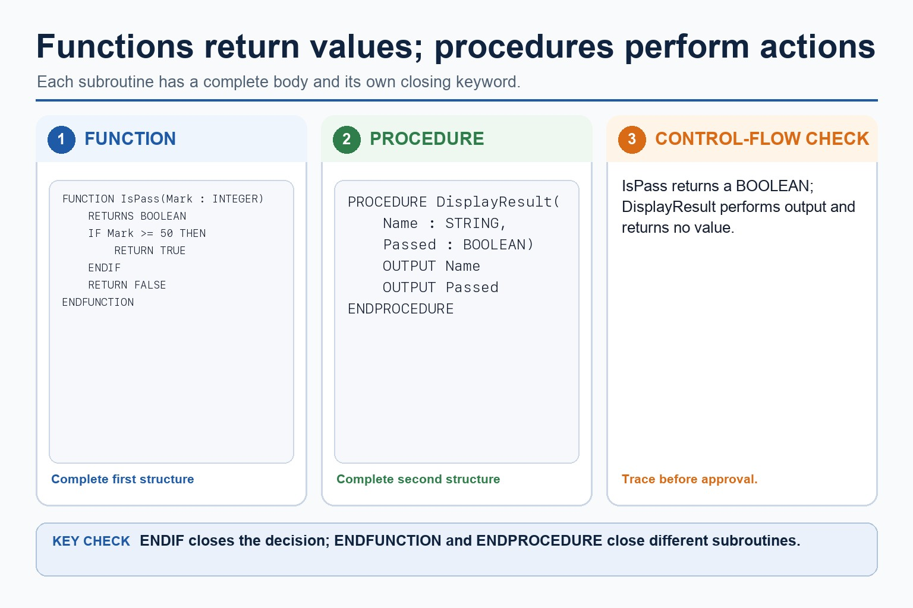
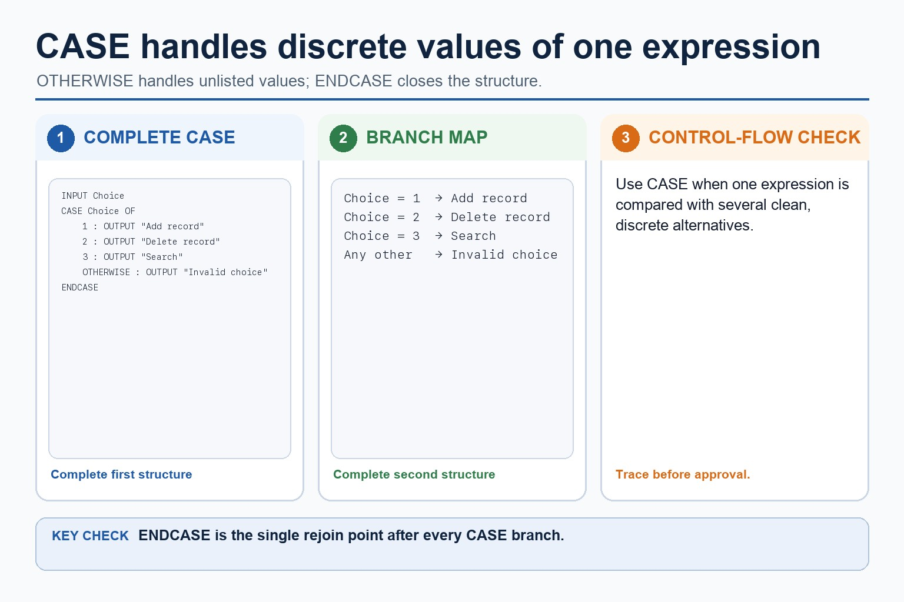
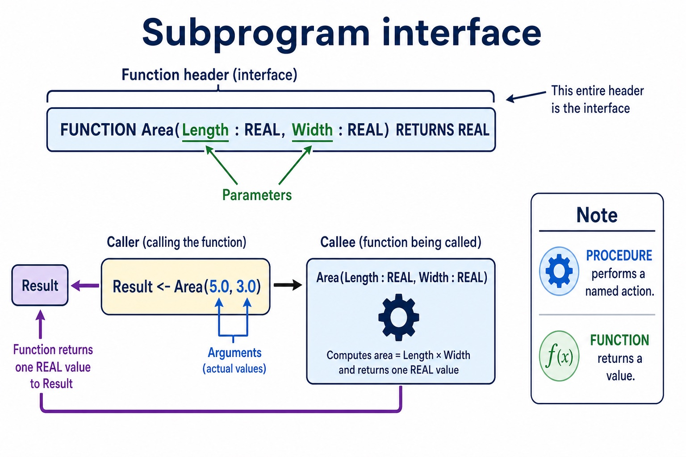
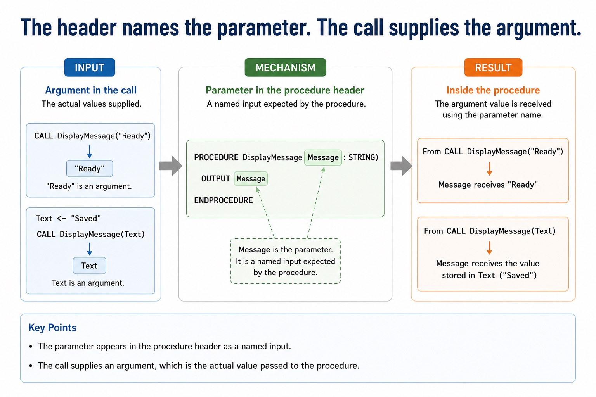
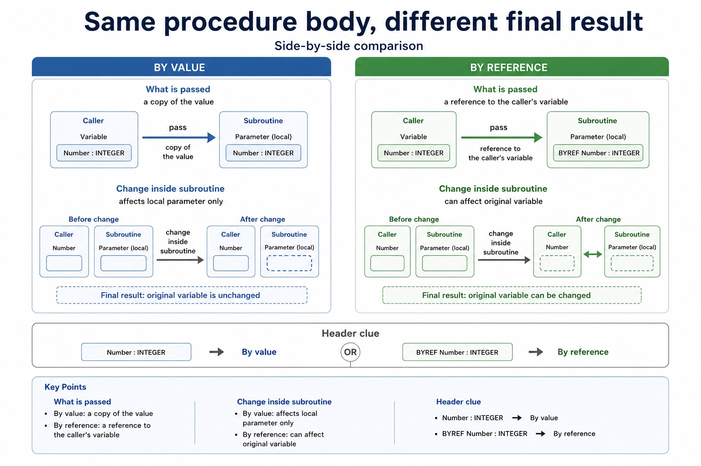
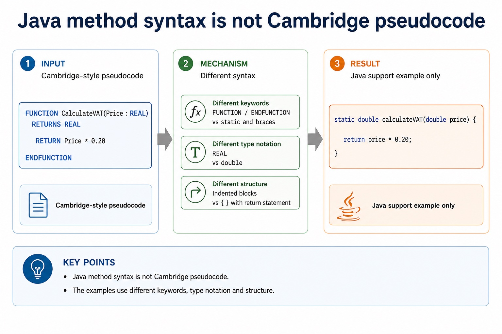

Cambridge AS9618 | Paper 2 | Section 11: Programming
Functions, interfaces and return values
Flexible-depth lesson
S11.07, S11.08 | Learn from the diagrams, test the method, then choose the practice you need.
Choose a Quick, Full or Deep route
Quick route
Use the diagnostic, learning objectives, first worked example and foundation question. Stop once the learner can explain the central distinction accurately.
Full route
Use every knowledge-point material set, the worked method, the terminology check and all questions.
Deep route
Add the prerequisite refresher, ask learners to connect the concept checklist, discuss the labelled extension and complete a transfer question without a model answer.
Part 1 | optional depth
Prerequisite knowledge and quick diagnostic
Recall S11.02, S11.06, S11.07 before starting this lesson.
Give one accurate definition or method step before continuing. If it is missing, revisit only that prerequisite.
Open optional prerequisite refresher
Write pseudocode for declaration and initialisation of constants; declaration of variables; assignment of values; expressions using arithmetic or logical operators; input from the keyboard; and output to the console.
Use declarations, constants, variables, assignment, arithmetic/logical operations and input/output.
Define and use a procedure; explain when the use of a procedure is appropriate; use parameters with none, one or more values passed by reference or by value.
Understand and use procedures with parameters passed by reference and by value.
Define and use a function; explain when the use of a function is appropriate. A function is used in an expression and its return value replaces the function call.
Understand and use functions, including return values in expressions.
Part 2 | knowledge-point material sets
Learn each point through visuals
Follow the map, the three-part explanation and the concrete cue. Open precise wording only after the idea is clear.
Open the concept checklist and choose what to teach
functions
return
values
expression / expressions
procedure header
function header
interface
parameter
argument
return value
01
S11.07 · decision
Functions · Return · Values · Expression
Concept map
functionsreturnvaluesexpression
See how it works
EvidenceA function is used in an expression and its return value replaces the function call
ChoiceDefine and use a function when the caller needs one returned value
ReasonRETURN sends a function value back to the caller
S11.07 diagrams
1 / 4
01
Concrete example · 1 of 4
Function calls can appear where a value is needed
Open text transcript
Calls and returned values
CALL DisplayMenu()
procedure call performs an action
VAT <- CalculateVAT(Price)
function return value is stored
Total <- DisplayMenu()
procedure does not return a value
OUTPUT CalculateVAT(Price)
02
Diagram · 2 of 4
Use functions for returned values and procedures for actions

Open text transcript
A function returns a value; a procedure performs an action.
IsPass returns a BOOLEAN based on whether Mark is at least 50.
Close the function's IF with ENDIF before ENDFUNCTION.
DisplayResult outputs its parameters and returns no value.
03
Comparison · 3 of 4
Use CASE for clear values of one expression

Open text transcript
CASE compares one expression with several discrete values.
Each listed value has its own action and OTHERWISE handles unlisted values.
Close the complete multi-way selection with ENDCASE.
04
Concrete example · 4 of 4
A function returns a value to the caller
Open text transcript
Function
Cambridge-style pseudocode
FUNCTION CalculateVAT(Price : REAL) RETURNS REAL
RETURN Price 0.20
ENDFUNCTION
VAT <- CalculateVAT(120.00)
When it fits
Use a function when a calculated, searched or checked result must be used later in the algorithm.
Open precise syllabus wording
Understand and use functions, including return values in expressions.
Define and use a function; explain when the use of a function is appropriate. A function is used in an expression and its return value replaces the function call.
02
S11.08 · concept
Procedure header · Function header · Interface · Parameter
Concept map
procedure headerfunction headerinterfaceparameterargumentreturn value
See how it works
MeaningUse the terminology procedure/function interface, header, parameter, argument and return value, and explain the relationship between these terms
MechanismA procedure header or function header names the subprogram and declares its parameters
ConsequenceThe procedure/function interface is the information a caller needs to use the subprogram
S11.08 diagrams
1 / 4
01
Diagram · 1 of 4
A subprogram interface connects caller and header

Open text transcript
A subprogram interface gives the caller the name, parameter list and types, and any return value/type.
A procedure header or function header declares that interface; a function header also declares its return type.
A parameter is named in the header; an argument is the actual value or variable supplied at a call.
RETURN sends a function value to the caller; displayed output is an effect, not a return value.
02
Diagram · 2 of 4
The header names the parameter. The call supplies the argument.

Open text transcript
Parameter and argument
Parameter in the procedure header
PROCEDURE DisplayMessage(Message : STRING)
OUTPUT Message
ENDPROCEDURE
Message is the parameter. It is a named input expected by the procedure.
Argument in the call
CALL DisplayMessage("Ready")
03
Concrete example · 3 of 4
Calculate a function return value
Open text transcript
Interactive return simulator
Use CalculateVAT(Price) to return Price 0.20 .
04
Concrete example · 4 of 4
Function calls can appear where a value is needed
Open text transcript
Calls and returned values
CALL DisplayMenu()
procedure call performs an action
VAT <- CalculateVAT(Price)
function return value is stored
Total <- DisplayMenu()
procedure does not return a value
OUTPUT CalculateVAT(Price)
Open precise syllabus wording
Use precise terminology: procedure/function header, interface, parameter, argument and return value.
Use the terminology procedure/function interface, header, parameter, argument and return value, and explain the relationship between these terms.
Supporting diagram library
1 / 4
01
Diagram · 1 of 4
Same procedure body, different final result
Open text transcript
Side-by-side comparison
By value
By reference
Header clue
Number : INTEGER
BYREF Number : INTEGER
What is passed
a copy of the value
02
Diagram · 2 of 4
The mark-winning difference is the returned value

Open text transcript
Procedure vs function
Procedure
Function
Main purpose
perform an action
return a value
PROCEDURE Name(...)
FUNCTION Name(...) RETURNS Type
03
Diagram · 3 of 4
Java method syntax is not Cambridge pseudocode

Open text transcript
Java support only
Cambridge-style pseudocode
FUNCTION CalculateVAT(Price : REAL) RETURNS REAL
RETURN Price 0.20
ENDFUNCTION
Java support example only
static double calculateVAT(double price) {
return price 0.20;
04
Diagram · 4 of 4
A procedure performs actions and returns no value
Open text transcript
A procedure performs an action and does not return a value.
A function returns a value and can be used in an expression.
Do not describe returning a value as optional for a Cambridge procedure.
Apply the idea
Worked method
01Use a procedure and a function
02PROCEDURE Increase(BYREF Number
03INTEGER, BYVAL Amount
04INTEGER) changes the caller's Number by Amount.
05REAL) RETURNS REAL returns Price 0.20, so Total <- Price + CalculateVAT(Price) uses the returned value in an expression.
06In Increase(Score, 5), Number and Amount are parameters while Score and 5 are arguments.
Open precise terminology and exam facts
Define and use a function; explain when the use of a function is appropriate. A function is used in an expression and its return value replaces the function call.
Use the terminology procedure/function interface, header, parameter, argument and return value, and explain the relationship between these terms.
Define and use a procedure when an algorithm needs a named action. A procedure may have no parameters, one parameter or several parameters. BYVAL passes a value that the procedure can use without changing the caller's variable; BYREF gives access to the caller's variable so an assignment can persist after the call.
Define and use a function when the caller needs one returned value. A function has a return type and RETURN statement; the call can appear in an expression, for example Total <- Price + CalculateVAT(Price). Use procedures for actions and functions for calculated, searched or checked values.
A procedure header or function header names the subprogram and declares its parameters; a function header also declares its return type. The procedure/function interface is the information a caller needs to use the subprogram: its name, parameter list and types, and any returned value/type.
A parameter is the named variable in the header, while an argument is the actual value or variable supplied at a call. RETURN sends a function value back to the caller; output displayed by a procedure is an effect, not a return value.
Beyond syllabus / 延伸知识（不要求背诵）
consistent style, modularity and automated tests reduce maintenance errors in larger programs.
Part 3 | select by learner need
Practice by question type
applyrecallfoundation2 marks
Question 1. What is included in a subprogram interface?
Show answer and marking guidance
Answer: Its name, parameters/types and any return value/type needed by a caller.
Marking guidance: Award one mark for each distinct, technically accurate point or method step.
Common error: For the command word apply, perform that exact action; do not replace it with an unrelated fact.
applyrecallapplication2 marks
Question 2. When is a procedure appropriate?
Show answer and marking guidance
Answer: When the algorithm needs a named action rather than a returned value used in an expression.
Marking guidance: Award one mark for each distinct, technically accurate point or method step.
Common error: Do not repeat the same point in different words; each mark needs a separate idea or method step.
explainexplaintransfer3 marks
Question 3. Explain how functions, interfaces and return values would be applied in a suitable computing context.
Show answer and marking guidance
Answer: Use the terminology procedure/function interface, header, parameter, argument and return value, and explain the relationship between these terms. Define and use a procedure when an algorithm needs a named action. A procedure may have no parameters, one parameter or several parameters. BYVAL passes a value that the procedure can use without changing the caller's variable; BYREF gives access to the caller's variable so an assignment can persist after the call. Define and use a function when the caller needs one returned value. A function has a return type and RETURN statement; the call can appear in an expression, for example Total <- Price + CalculateVAT(Price). Use procedures for actions and functions for calculated, searched or checked values.
Marking guidance: Each mark needs a relevant point linked to the stated context.
Common error: Do not copy the worked example unchanged; transfer the method and check it against the new context.
Related past-paper indexes
Reference
Marks
Command word
Question type
9618/21/W/25 Q6(b)
7
calculate
calculate
9618/23/W/25 Q6(b)
7
calculate
calculate
9618/23/S/25 Q1(b)
5
complete
recall
9618/21/S/25 Q2(c)
4
calculate
calculate
Index only: Cambridge question and mark-scheme wording is not reproduced on this public course page.
Part 4 | close when ready
Summary and exam reminders
Summary
Define functions, interfaces and return values with the exact technical vocabulary expected by the syllabus.
Use the lesson method on a fresh context and show the intermediate decision, representation or calculation.
Match the shape of the answer to the command word and the available marks.
Check the final answer against the scenario instead of repeating a memorised sentence.
Common error to correct
Students often think working Java automatically means good pseudocode. Correction: Paper 2 rewards clear Cambridge-style algorithm expression.
Exam technique
Follow the command word: state gives a fact; explain links a cause to a consequence; compare covers both sides.
Match the number of independent points or method steps to the available marks.
For functions, interfaces and return values, use the exact technical term before applying it to the scenario.